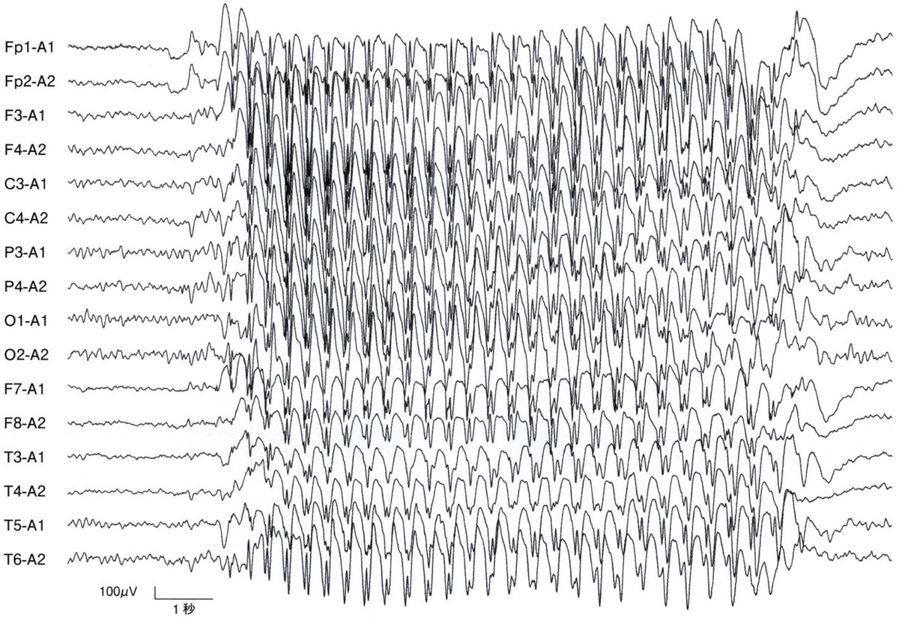
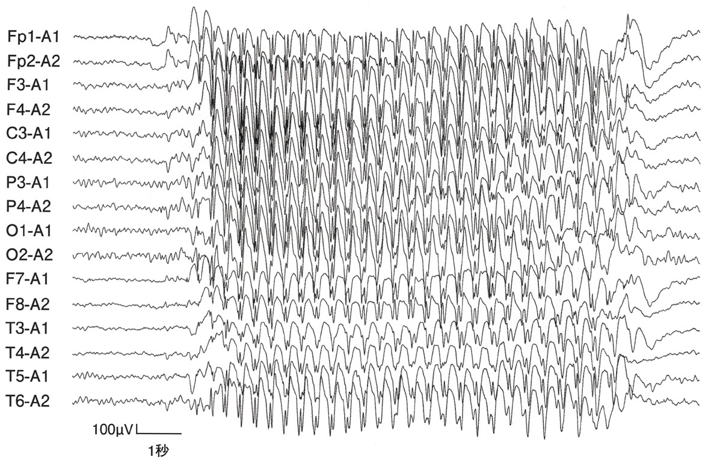

| 頭痛 | 性状 | 部位 | 随伴症状 | 治療 |
| 片頭痛 | 拍動性・中等度以上 | 片側（両側も） | 悪心・嘔吐・光過敏・音過敏・体動で増悪 | トリプタン（急性期）・β遮断薬（予防） |
| 緊張型 | 非拍動性・締め付け | 両側 | 悪心なし（体動で増悪なし） | NSAID |
| 群発頭痛 | 激烈・眼窩周囲 | 片側（眼窩周囲） | Horner・結膜充血・流涙・鼻閉（同側） | 純酸素・トリプタン（急性） |
| 記述 | 正誤 |
| 男性に多い | ✕（女性に3倍多い） |
| 入眠中に多い | ✕（群発頭痛が入眠中に起こりやすい） |
| 体動により増悪する | ○（片頭痛の診断基準の一つ） |
| 拍動性の痛みが多い | ○（60〜70%） |
| 発作予防にトリプタン | ✕（トリプタンは急性期治療、予防はβ遮断薬等） |

| 目的 | 薬剤 |
| 急性期（軽〜中等度） | NSAID・アセトアミノフェン（＋メトクロプラミド） |
| 急性期（中〜重度） | トリプタン（スマトリプタン等） |
| 予防（β遮断薬） | プロプラノロール・メトプロロール |
| 予防（Ca拮抗薬） | ロメリジン（日本で多用） |
| 予防（その他） | バルプロ酸・アミトリプチリン・トピラマート |

| 頭痛 | 性状 | 部位 | 随伴症状 | 治療 |
| 片頭痛 | 拍動性・中等度以上 | 片側（両側も） | 悪心・嘔吐・光過敏・音過敏・体動で増悪 | トリプタン（急性期）・β遮断薬（予防） |
| 緊張型 | 非拍動性・締め付け | 両側 | 悪心なし（体動で増悪なし） | NSAID |
| 群発頭痛 | 激烈・眼窩周囲 | 片側（眼窩周囲） | Horner・結膜充血・流涙・鼻閉（同側） | 純酸素・トリプタン（急性） |
| てんかん | 治療薬 |
| West症候群 | ACTHパルス療法・ビガバトリン |
| 欠神てんかん | エトスクシミド・バルプロ酸 |
| 複雑部分発作 | カルバマゼピン・レベチラセタム |
| Lennox-Gastaut症候群 | バルプロ酸・クロナゼパム・ラモトリジン |
| 強直間代発作（全般性） | バルプロ酸・レベチラセタム |
| 特徴 | 正誤 |
| 生後3か月以内に好発する | ✕（生後4〜8か月） |
| 発作は発熱時に多い | ✕（熱性けいれんとは別） |
| 発作は群発する | ○（連続した点頭発作群） |
| 脳波で3Hz棘徐波を認める | ✕（3Hzは欠神→Westはヒプスアリスミア） |
| 精神発達は正常である | ✕（多くが精神発達障害） |